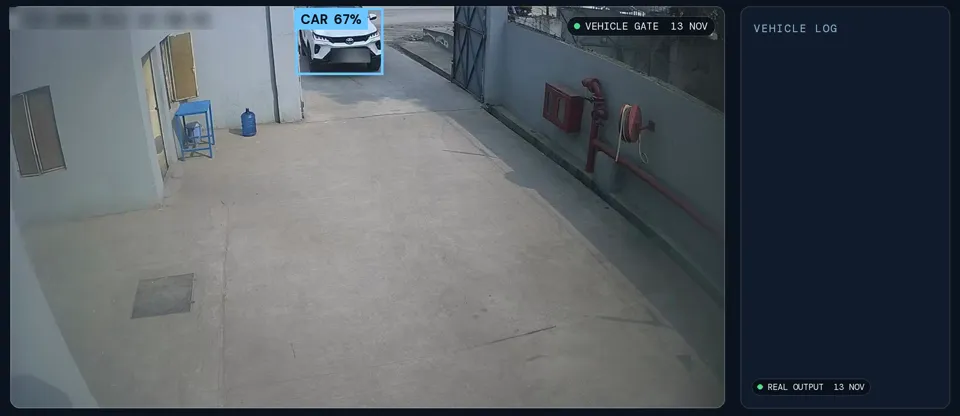
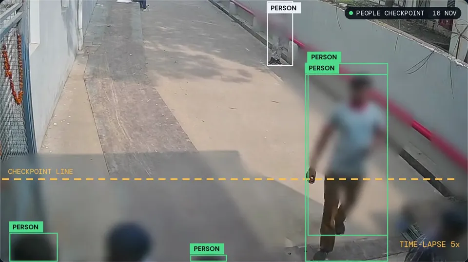
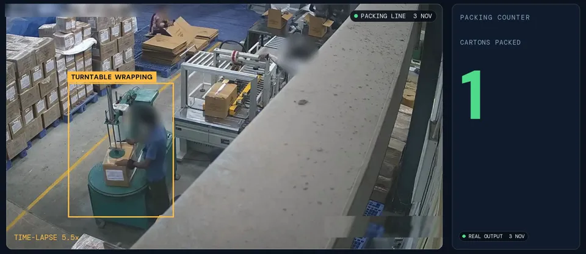
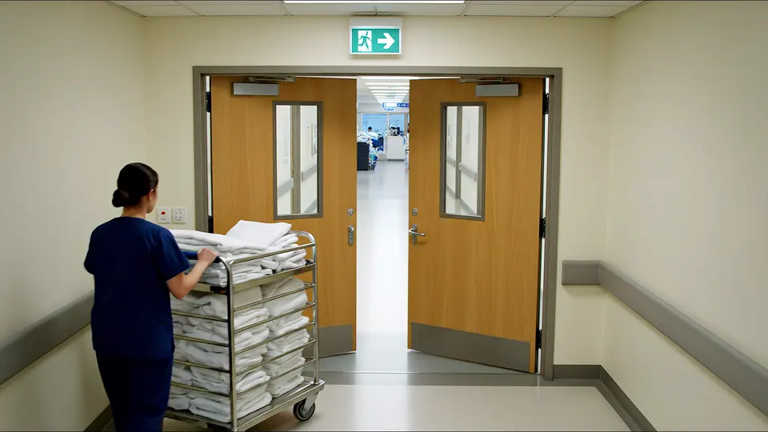

Checkpoints
A checkpoint is a fixed place where something has to be counted, logged or checked. Gate, dock, line, door. VisorVolt builds the count or the check for your site, a person audits a sample, and every row keeps its clip. The checkpoints below are examples, not a menu. If yours is not here, show us.
Count it, log it, or check it.
Count
How many passed this line? Cartons at a packing line, pallets from dock to store, cartons loaded at dispatch. Healthfields measures these against a person.
Log
Which vehicle or unit passed, and when? A truck's number plate read and stamped at the gate, dock times, gate-to-gate time. Matched to your own record where you have one.
Check
Is this present, in place, or following a rule? A second lane that we run in pilots. See the end of this page.
Vehicle gate
- What it counts
- Each vehicle that enters or leaves. The number plate is read and the time is stamped. A car is logged as a car, not as a truck.
- The count
- A truck arrives and the log shows IN at 11:03:46.
- Where else
- Factory and warehouse gates, quarries and mines, construction sites, ports, cold stores, campuses.
- Clip


Real footage from the Healthfields gate. The number plate on the car is a placeholder.
Dock
- What it counts
- When a truck docks and when it leaves the dock, with the time of each.
- The count
- Docks, time noted. Leaves the dock, time noted.
- Where else
- Any site with loading bays: distribution, food and drink, pharma stores, retail receiving.
- Clip

Real footage from Healthfields.
Gate to gate
- What it counts
- One visit from the plate read on the way in to the plate read on the way out.
- The count
- About 2 hours 16 minutes in the clip. Every turnaround is on record.
- Where else
- Any site where waiting time costs money: ports, plants, quarries.
- Clip

Real footage from Healthfields.
People crossing a line
- What it counts
- Each person who crosses a line, detected and logged with the time.
- The count
- Detections per crossing. Faces are blurred in everything we publish.
- Where else
- Entrances, restricted zones, shift changes, site access points.
- Clip

Real footage from Healthfields. Faces blurred.
Flows inside the site
- What it counts
- Goods moving between rooms: a loaded pallet followed from the dock to the store.
- The count
- One pallet, tracked from the dock camera to the store camera.
- Where else
- Factories, warehouses, cold stores, kitchens, workshops.
- Clip

Real footage from Healthfields.
Production line
- What it counts
- A running count of cartons at the end of a packing line.
- The count
- 141 cartons counted by camera and 141 by a person, over 38 sampled windows on two unseen days, 18 and 19 November 2026. Healthfields is ongoing, so this is development-stage evidence.
- Where else
- Any line where finished goods leave one point: food, drink, consumer goods, parts, parcels.
- Clip

Real footage from Healthfields.
Dispatch
- What it counts
- Cartons counted live as they are loaded onto the truck.
- The count
- On a day the model had never seen, the camera counted 102 cartons and a person counting each carton counted 103 (12 October 2026).
- Where else
- Distribution centres, factories, cold chain, e-commerce fulfilment.

Real image from Healthfields.
Every count kept apart
Counts are never netted into one number. Each is kept by checkpoint, by door, by in or out, by item and by truck, and every row comes from a clip.
Example row (real): Vehicle gate | In | Truck | 11:03:46 | clip.
- Checkpoint
- Vehicle gate
- Direction
- In
- Item
- Truck
- Plate
- UP16RT9643
- Time
- 11:03:46
- Clip
A real log row from the Healthfields gate. Every row works this way.
Illustration / demo. Not a client result.
Rules, such as protective gear
The same checkpoint can apply a rule. Full gear passes. One item missing is flagged as partial. No gear is flagged. Each person is checked as they cross the line.
This is a generated demonstration of how a rule check would look. We have not measured accuracy for protective-gear checks and we are not claiming any.

Generated demonstration. The on-frame labels read DEMO FOOTAGE AI-GENERATED and DEMO NOT A CLIENT RESULT.
The same checkpoint, in other kinds of site.
These pictures are generated illustrations, not customers. They show where the same gate, door and line checkpoints exist.



Four questions we ask before we take one on.
- Is it a fixed place where we can see it?
- Is it something two careful people would count or judge the same way?
- Is there a record to compare with, such as a delivery note, a scan, a slip or a plate?
- Does money or a decision already depend on the answer?
If the answer to any of these is no, we will say so before you buy.
Check: is it there, is it in place?
Some checkpoints ask a yes or no question about a photo or a fixed view: is this part present, is this bay occupied. We run this lane in pilots, and we say so plainly. A truck-at-bay trigger has been running at Healthfields since October 2026.
In a pilot with one of the world's largest telecom tower companies, on 74 towers the system had never seen, it flagged 42 of 45 photos with a bolt or rust fault and cleared 33 of 41 clean photos.